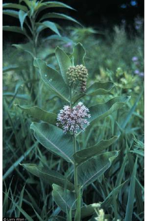

Common milkweed is a plant easily found in the Vermont flora, as well as throughout America. Given the scientific name of Asclepias syriaca and of the Asclepiadaceae or milkweed family, it is also known as wild cotton, Virginia silk, silk weed, and cotton weed, and is known for its characteristic milky sap and silky hairs that are attached to the seeds.
Milkweed shoots first begins to emerge around mid April or May, and it goes on to flower later in the summer, from around June to early August. Its flowers, which are produced in abundance, are small and form sphere like clusters that have a delicate purplish-pink or white color. Each of these fragrant flowers has its own long stalk, and the fruit it produces are teardrop-shaped pods. It is in these hairy grayish-green pods that the seeds are contained – over two hundred seeds in each pod when they open and disperse in early fall. By the time the pods open, it is also common for the plant to have turned reddish in color.
The seeds of the common milkweed are flat, oval, and, as stated, have big tufts of silky white hairs attached to them. These hairs facilitate seed dispersal by wind, as opposed to relying on animals to distribute the seeds; however, milkweed is known for attracting the monarch butterfly, which is why this type of butterfly is sometimes dubbed the milkweed butterfly (Johnson 241). When winter comes, the pods remain on the stems and turn brown with a shiny yellow interior. This perennial flower is commonly found along meadows and on roadsides, giving it the reputation as a weed. Its growth is a big problem with no-till and reduced-tillage agriculture areas (Uva 102). Milkweed prefers to grow in well-drained soils and does not like frequent mowing. But that has not hampered its spread all over America: in the North-East, down south to Virginia and Georgia, and west to the Rocky Mountains.
The growing period of the common milkweed actually begins in winter when its root buds emerge, however the seedlings do not start to flower until after the plant’s first year. When milkweed is young, its leaves are dark green, waxy, pointed, opposite, and have a large white vein up the center of the leaf. As the plant matures, the upright stems lose their branches, become hollow and covered in hairs, and all parts of the plant exude the milky sap for which the plant was named. The upper part of the mature leaf is smooth and dark green, with the bottom part being hairy and lighter in color. The roots of this plant are thick, fleshy, and white and grow to be quite extensive.
The common milkweed is very closely related to the hemp dogbane (Apocynum cannabinum), another plant native to Vermont that was traditionally used as medicine and for making cordage. There are some differentiating characteristics: the leaves of the hemp dogbane are smaller than those of milkweed, and its stems have many branches. The flowers are similar, except that the dogbane’s are smaller, greenish-white, and bell shaped. The fruits too share similar qualities, but those of the hemp dogbane are longer, more narrow, and curved, unlike those of milkweed.
Milkweed is a valuable plant because it can be used for many different crafts, and it is edible. The silk fibers attached to the seeds can be used to make cord – for clothes, ropes, or other such crafts (Coon 29). Milkweed is also called a “rubber plant” along with goldenrod and yellow bells, because its milky sap can be used as a substitute for rubber – not a good one, but a substitute nonetheless. In fact, during World War II when there was a rubber shortage, children in Vermont were sent out to collect milkweed, and the sap was used as “a rather sorry substitute” for rubber (Emery, Rood 101). It was also rumored that milkweed’s silky fibers were collected to use as stuffing in life vests during World War II, however there is no solid information to back up this claim (Emery). Like its relatives in the dogbane family (Apocynaceae), milkweed was used by Native Americans to make string, twine, nets, and even clothing (Coon 62).
The medicinal qualities of milkweed include is reputed abilities to cure warts and as a diuretic. Some varieties of the milkweed family are even reputed to cure cancer; however, none of this information has been proven (Coon 71). Milkweed’s many uses also explain why its scientific name refers to the so-called “father of medicine,” Aesculapius, a Greek who was born about one hundred years before Christ. Given that milkweed is such an American plant, it seems odd that its scientific name would refer to an ancient Greek doctor (Coon 70). Milkweed is one of those typically American plants: it is not only indigenous to the New World, but it is one of those plants that grow in everyone’s backyard. Today, however, only dedicated nature buffs use milkweed for any practical purposes (Emery). Although this plant is called a “weed,” it holds a special place in many Americans' hearts because of its unique and useful qualities.
